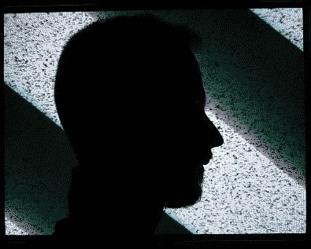

Inner World of Distracted Soul

Ещё в детстве я осознал (насколько это было возможно неокрепшим умом), что одинаково люблю разные пути, профессии, идеи. Остановка на одном пути вызывает экзистенциальный ужас, но если всё работает в симбиозе – оно вызывает восхощение. Узнавать что-то новое из самых разных сфер – дар и проклятие: иногда это становится познанием ради познания. С каждым годом интерес к миру только рос, а вместе ней – рассеянность.
В 19 лет, после череды неприятных событий, мир воспринимается совсем иначе.
Как сон. Сон внутри сна.
Я долго привыкал к "новой" жизни без внешней опоры; внутренняя с самого начала не выдержала такого давления. Оно пало, как дерево от урагана. Но, вокруг этой кажущейся гибели растёт другая опора, выходящая за пределы быта и отдельной жизни. Она не отрицает опыт прошлого, но существует благодаря нему.
Дни стали бесконечным странствованием: без цели, планов, надежд. Смерть больше не страшит, но она забрала с собой и жажду жизни. А без неё всё вокруг кажется абсурдным.
Остаётся лишь процесс. Настоящий, естественный. Как сама природа.
2026-03-26